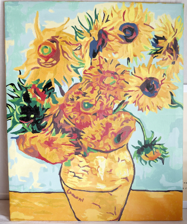
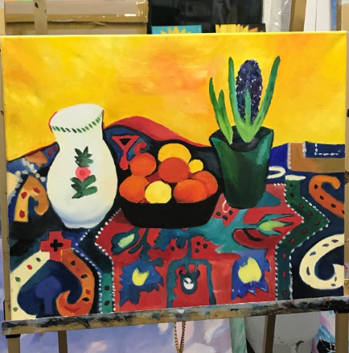
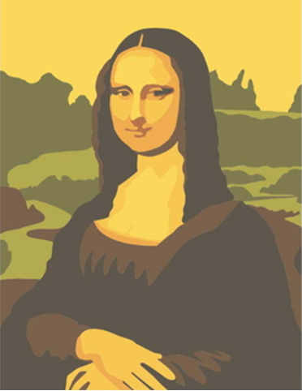

명화그리기
DIY 명화그리기는 자신이 선택한 유명 화가의 그림을 반제품의 상태로 구매해 완성시키는 제품으로 그리기 활동을 통해 취미활동과 문화생활을 동시에 누릴 수 있다. 특히 평소에 좋아하던 화가의 그림을 저렴하게 소장할 수 있다는 점에서 각광받고 있다

해바라기
-고흐-

히아신스가 있는 정물화
-아우구스트 마케-

모나리자
-레오나르도 다빈치-